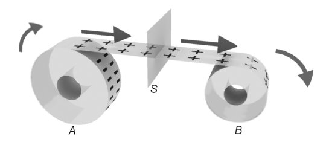
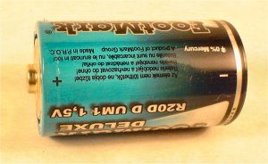
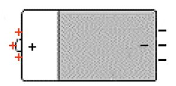

Producerea şi utilizarea curentului continuu |
Curentul electric |
 Provocarea 2-1
Provocarea 2-1
Imaginează−ţi că desfaci banda adezivă de pe rola notată A din figura 2−1 şi o înfăşori pe rola
notată B.

Figura 2-1. Banda adezivă este desfăcută de pe rola A şi este înfăşurată pe rola B.
Prin suprafaţa imaginară S trec odată cu banda spre rola B, în patru secunde de derulare, o jumătate de
miliard de sarcini elementare pozitive în exces.
Cât este, în coulombi, cantitatea de sarcină electrică pozitivă care traversează suprafaţa S în cele patru
secunde de derulare?
În procesul descris în provocarea 2−1, suprafaţa S este traversată atât de electronii cât şi de protonii care
alcătuiesc banda. Trec însă mai multe sarcini pozitive (care sunt în exces pe bandă). Astfel, se produce un transfer net
de sarcină prin suprafaţa S.
 Numim curent electric printr−o suprafaţă oarecare, un
transfer net de sarcină electrică prin acea suprafaţă.
Numim curent electric printr−o suprafaţă oarecare, un
transfer net de sarcină electrică prin acea suprafaţă.
Tot timpul derulării benzii de la provocarea 2−1, sensul transferului sarcinii pozitive nete prin suprafaţa S a
rămas acelaşi: spre dreapta (de la A spre B).
Sensul curentului electric printr−o suprafaţă este sensul în care
se transferă sarcină netă pozitivă prin acea suprafaţă.
Provocarea 2-2
Câtă sarcină electrică netă este transferată, în medie, în fiecare secundă prin suprafaţa S în procesul descris
în provocarea precedentă?
Numim intensitate medie a curentului electric printr−o
suprafaţă, debitul de sarcină electrică netă prin acea suprafaţă:
Intensitatea medie
a curentului electric |
= |
Sarcina netă transferată
Durata transferului |
. |
Cu simboluri,
Unitatea de măsură a intensităţii curentului electric este
amperul (simbol A) şi este unitate fundamentală în Sistemul Internaţional de unităţi.
Din relaţia de definiţie a intensităţii curentului electric, rezultă că:
un coulomb = un amper x o secundă,
sau, cu simboluri:
1 C = 1 A·s.
Provocarea 2-3
Cât este intensitatea medie a curentului electric care traversează suprafaţa S în procesul descris la provocarea 2−1,
în cele patru secunde de derulare a benzii?
Un bec de lanternă funcţionează normal când este străbătut de un curent electric cu intensitatea de câteva zecimi de amper.
Separarea sarcinilor electrice prin derularea benzii adezive nu este foarte eficientă - intensitatea curentului electric
astfel obţinut este infimă!
De−a lungul timpului au fost puse la punct metode mult mai eficiente de separare a sarcinilor electrice. Una dintre
soluţiile de succes este separatorul electrochimic de sarcini electrice - numit uzual baterie electrică (figura 2−2).
|  |
Figura 2−2. Separator electrochimic de sarcini electrice.
|
Separatorul electrochimic reprezentat în figura 2−2 este de fapt o celulă individuală de separare a sarcinilor,
nu o baterie. În general, o baterie este un grup de elemente asemănătoare sau identice, asamblate împreună. Astfel,
o baterie electrică este un grup de celule individuale de separare a sarcinilor electrice.
Ceea ce numim uzual baterie electrică este un reactor chimic încapsulat, în care se desfăşoară reacţii chimice care
au ca efect separarea sarcinilor electrice (figura 2−3).
|  |
Figura 2−3. Separarea sarcinilor într−o "baterie" electrică.
|
O parte dintre electroni sunt "înghesuiţi" la borna negativă a bateriei (notată "-"), în timp ce o parte dintre ionii
pozitivi rămân "descoperiţi" la borna pozitivă (notată "+").
Doar o foarte mică parte dintre sarcinile care alcătuiesc bateria sunt în exces la cele două borne, astfel că separarea
sarcinilor nu este vizibilă cu ochiul liber. Suntem astfel nevoiţi să dezvoltăm metode şi instrumente speciale care să ne
permită detectarea separării sarcinilor electrice.